CS 184: Computer Graphics and Imaging, Spring 2026
Project 3: Path Tracer
Link to webpage: cal-cs184-student.github.io/hw-webpages-nadahameed/hw3
|
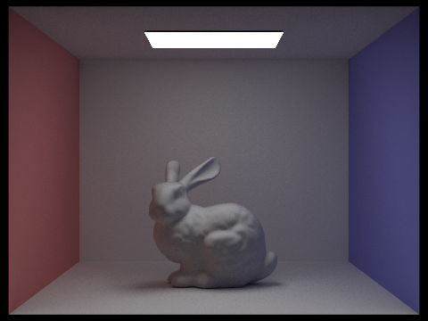 |
Overview
In this homework, we implemented a renderer that uses a pathtracer algorithm. First, we implemented ray generation and scene intersection. We generated rays and checked if they intersected our scene. Then, we implemented a bounding volume hierarchy to speed up the path tracer. Then, we implemented several lighting options, direct illumination and global illumination. Direct illumination is when there is one source of light, and global illumination is when there is light constantly being reflected. In global illumination, we implemented recursive methods, which was pretty interesting. But the rendering time was very long, since there are thousands of primitives and we are, again, checking light bounces recursively. Finally, we implemented adaptive sampling, to reduce noise without increasing samples.
This homework was pretty interesting because it's how computer graphics are used in a lot of other things, like game engines or films/animation. So seeing it in practice was pretty interesting. It was also very tedious! But our results ended up being very realistic, so it was worth it! A lot of times, when we view objects we don't really consider things like ambient lighting, but once we add that in, we kind of see how our images somehow become a lot more realistic. Very cool.
Part 1: Ray Generation and Scene Intersection
To generate the rays, we had to take normalized image coordinates and output a ray in the world space. To do this, we followed 3 main steps.
- Transform image coordinates to camera space
- Generate the ray in camera space
- Transform that ray to a normalized ray in world space
- Convert hFov and vFov to radians
- a = tan(hFov/2)
- b = tan(vFov/2)
- For a point (x_m, y_m) in coordinate system M, the corresponding point (x_n, y_n) in system N is:
x_n = 2 * a * x_m - a
y_n = 2 * b * y_m - b
- In this case, our camera coordinates are (x_n, y_n, -1).
To implement raytrace_pixel, we sampled camera rays and traced them through the scene, returning the average of them. We followed these steps:
- Take ns_aa samples (via a loop). Keep a variable for total radiance. Within the loop:
- Take a sample in the given pixel.
- Convert the sample to image coordinates. The input (x,y) is the bottom left of the pixel, so just add it to the sample coordinates.
- Normalize these coordinates to [0,1] x [0,1], since that is what generate_ray expects.
- Call generate_ray.
- Estimate scene radiance using est_radiance_global_illumination on the resulting ray.
- Accumulate the total radiance (so add to the total radiance).
- Compute the average by dividing total radiance by the number of samples.
- Write this average to the sample buffer.
We had to implement ray-triangle intersection. To do this, we used the Moller Trumbore formula from lecture. Essentially, we used the edges of the triangle and cross/dot products to check if the ray would hit within the bounds of the triangle.
In our code, that means we compute u, v, and t from those products, skip the hit if the determinant is basically zero, and check that u and v stay inside the triangle and t stays between min_t and max_t. If there is a hit, we also get the three vertex normals using u and v.
We could've used something similar to homework 1, where we check if a point is inside a triangle via three line equations, but I think that would've been a bit harder to implement with rays, and also Moller Trumbore seemed like the faster, simpler option.
We had to implement ray-sphere intersection. We used the formulae from lecture to implement this, via the quadratic formula/discriminant. We created a helper that found the solutions and ordered them (from small to large), and used the helper to implement checking for intersections and updating the Intersection data.
The helper gives us the two t values in order and then we pick the first one that lies on the ray segment and use it to set the intersection.
|
|

|

|
Part 2: Bounding Volume Hierarchy
Our BVH construction algorithm, and the heuristic we chose for picking the splitting point:
PART 1: We had to construct a BVH from the given vector of primitives and max leaf size configuration. We followed these steps:
- Compute the bounding box of the primitives.
- Initialize a new BVH node with that bounding box.
- Check if it's a leaf node (using max leaf size). If so, return the leaf node to end the recursion.
- Otherwise, we need to divide the primitives and bounding boxes into left and right.
- We had to compute the split point. We did this by computing the centroids of the primitives, and then picking an axis (x, y, or z) based on which one had the largest range/spread. To compute the split point, we used the midpoint of the best axis.
- Then we divided all primitives into left or right based on their centroid (via vectors of primitives).
- An error that could occur is infinite recursive calls. To fix this, if either our left or right sides are empty, then we just have a fallback where we split the primitives equally between them.
- Then we had to update the original primitives vector with our left and right groups.
- We can then make our recursive calls and set the left and right children of our node recursively (call construct_bvh on the left and right of the primitives).
- Finally, we return our newly updated node.
PART 2: We had to check if a ray intersected a bounding box and at what points (of entry and exit). We used the equations from lecture for this, the ray and axis-aligned plane intersection formula and the ray and axis-aligned box intersection method. PART 3: We checked if a ray intersects any primitives in the BVH. We followed this basic algorithm:
- Reverse traversal algorithm:
- if ray misses the bounding box, return
- if it's a leaf node, iterate over all primitives, and check if the ray intersects any of them and return that, false if not
- if it's not a leaf node, we recurse on its children to see if there are any intersections
- return false if all the previous are false
Images with normal shading for a few large .dae files that we can only render with BVH acceleration.

|

|

|

|
Comparing the maxplanck.dae scene with the CBlucy.dae scene, the rendering times for these moderately complex geometries (the first with tens of thousands of triangles and the second with hundreds of thousands of triangles), we can see that the rendering times differ greatly with and without BVH acceleration. For the maxplanck.dae scene, the rendering time with BVH acceleration was 0.0373s. Without BVH accleration, the rendering time was 11.1565s. For the CBlucy.dae scene, the rendering time with BVH acceleration was 0.0225s. Without BVH acceleration, the rendering time was 60.9923s. For the cow.dae scene, the rendering time with BVH acceleration was 0.0302s. Without BVH acceleration, the rendering time was 1.3293s. For the blob.dae scene, the rendering time with BVH acceleration was 0.0468s. Without BVH acceleration, the rendering time was 104.7974s. From these results, we can observe that rendering with BVH acceleration decreases rendering time by at least a multiple of 2. Rendering without BVH acceleration siginificantly lengthens the rendering time, especially with scenes that are composed of moderately complex geometries such as maxplanck.dae and CBlucy.dae.
Part 3: Direct Illumination
We had two different implementations of the direct lighting function.
- Direct lighting with Uniform Hemisphere Sampling
- In this method, we estimated the direct lighting on a point by sampling uniformly in a hemisphere.
- We followed the pseudocode from lecture, and followed the Monte Carlo estimator.
- We sampled scene->lights.size() * ns_area_light times. In one sample:
- Our sampler returned a vector wi, which we transformed to world space.
- Then we created a new ray from our sample in world space and hit_p, where we hit, and we also set the ray's minimum to be a given epsilon.
- Then we created a new intersection, and checked if it intersects the light source.
- If yes, we used the reflectance eqaution from lecture to compute the current term in the summation, and added it to the total sum.
- If not we continue the loop (sampling).
- Then we multiplied our ultimate sum by 1/num_samples, again, following the reflection equation from lecture, and returned that value.
- Direct lighting by Importance Sampling Lights
- We followed these steps, where we sample all the lights directly instead of as uniform directions in the hemisphere.
- We loop over all the lights in scene->lights.
- If the light is a point light we only need one sample.
- Otherwise, sample ns_area_light times.
- For each sample:
- Call light->sample_L to get the incoming radiance Li, world-space direction wi, distance to light, and probability (pdf).
- Convert world space wi to object space wi_local.
- Check if the light is behind the surface
- Cast a new ray from hit_p toward the light, and set min_t to be epsilon, max_t to be the distance to light - epsilon.
- If there is no intersection between hit_p and the light, we apply the reflectance equation from lecture.
Images rendered with both implementations of the direct lighting function.
| Uniform Hemisphere Sampling | Light Sampling |
|---|---|
|
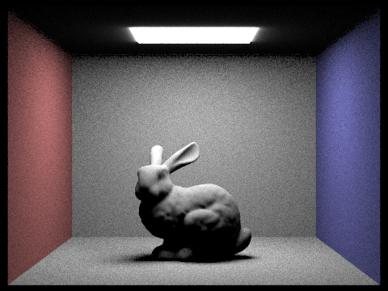 |

|

|
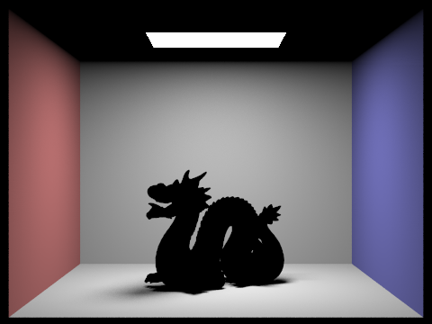 |
Focusing on one particular scene with at least one area light and compare the noise levels in soft shadows when rendering with 1, 4, 16, and 64 light rays (the -l flag) and with 1 sample per pixel (the -s flag) using light sampling, not uniform hemisphere sampling:

|

|
|
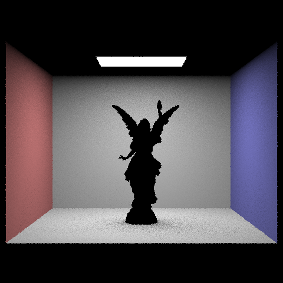 |

|
Here, we display the CBbunny scene with at least one area light. Under light sampling, the noise levels in soft shadows when rendering decreases in area as the number of light rays increases.
The results between uniform hemisphere sampling and lighting sampling is in uniform hemisphere sampling, since rays are distributed fairly in all directions no matter where the light source is located. This diminishes illumination and causes the image to look darker, with more shadows, and more noise. Compared to lighting sampling, lighting sampling specifically direct rays towards where the light source is located which effectively takes in the direct illumination. This causes a brighter image with shadows that are not overpowering and reduces noise. The distribution of rays while taking into account the location of the light source is the main difference between uniform hemisphere sampling and lighting sampling. By using lighting sampling, images will look much brighter and higher quality.
Part 4: Global Illumination
Our implementation of the indirect lighting function:
- We start by setting the outgoing radiance to
one_bounce_radiance(direct lighting at this hit). - If the ray’s
depthis at most 1, we stop and return that only (no more indirect bounces). - Otherwise we call
sample_fon the BSDF to get an incoming directionwi, the PDF, and the BRDF valuef. We build a new ray in world space from the hit point (with a small epsilon offset) and set itsdepthtor.depth - 1. - If the bounce ray hits something, we recursively call
at_least_one_bounce_radianceto getLiat the next surface, and add the indirect termf * Li * cos(theta) / pdf(using the cosine ofwiin local coordinates). If the bounce misses, we keep only the direct term we already computed. - If
isAccumBouncesis true, we add that indirect term to the direct lighting; if false, we replace the result with just the indirect term (for the “single bounce only” mode).
Some images rendered with global (direct and indirect) illumination, using 1024 samples per pixel:
|
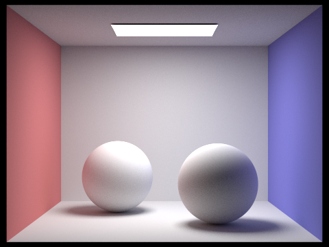 |
|
Comparing rendered views first with only direct illumination, then only indirect illumination, using 1024 samples per pixel:
|
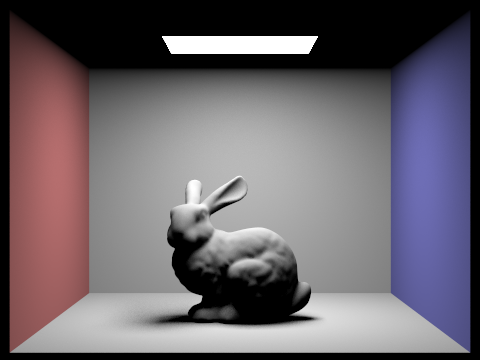 |
|
Here, direct illumination is more brighter whereas indirect illumination has softer color bleeding in the ceiling.
N Bounce Rays: For CBbunny.dae, comparing rendered views with max_ray_depth set to 0, 1, 2, 3, and 100, using 1024 samples per pixel. Not accumulating bounces.
|
|
|
|
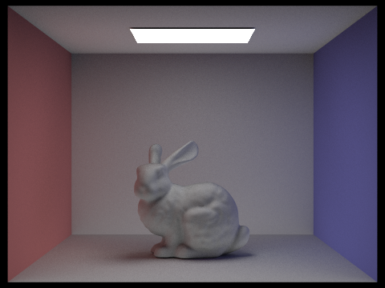 |
|
|
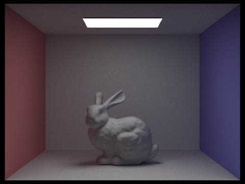 |
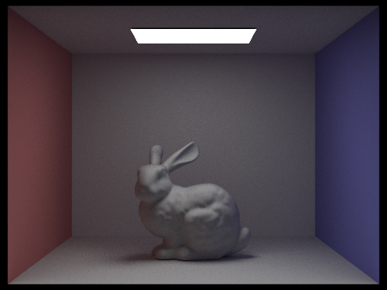 |
N Bounce Rays: For CBbunny.dae, comparing rendered views with max_ray_depth set to 0, 1, 2, 3, and 100. Use 1024 samples per pixel. Accumulating bounces.
|
|
|
|
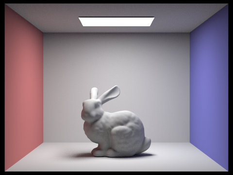 |
|
|
|
|
Russian Roulette: For CBbunny.dae, comparing rendered views with max_ray_depth set to 0, 1, 2, 3, and 100, using 1024 samples per pixel. Not accumulating bounces.
|
|
|
|
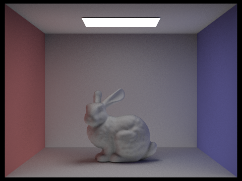 |
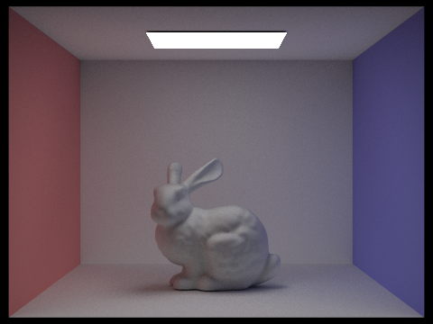 |
|
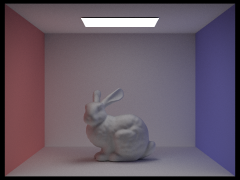 |
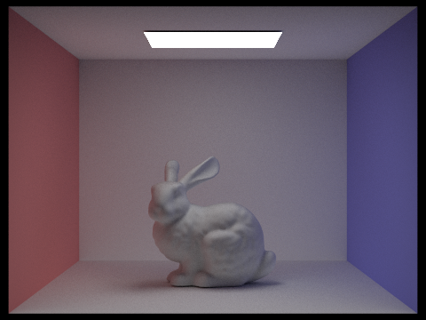 |
Here, we see that as max_ray_depth increase, the image gets darker. There is more indirect lighting and softer shadows. The rendering time also increases due to the amount of additional bounces needed.
Comparing rendered views with various sample-per-pixel rates, using 4 light rays.
|
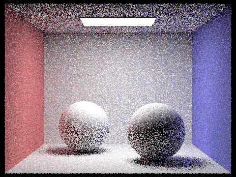 |
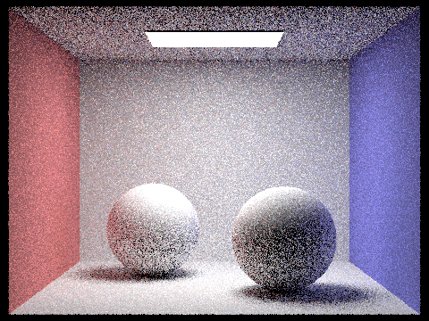 |
|
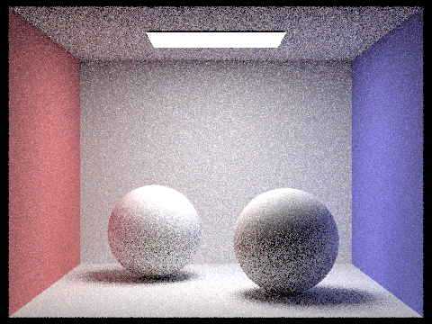 |
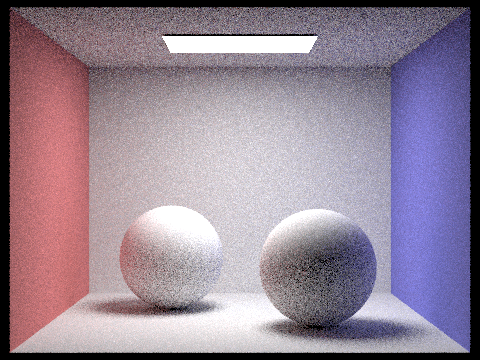 |
|
|
|
|
|
When samples per pixel is 1, the image has a lot of noise. As the samples per pixel increases, variance is halved at samples per pixel = 2 and moving forward. The image improves in quality, looking more smooth, less noise, and more clean. This shows the impact of convergence rate of Monte Carlo.
Part 5: Adaptive Sampling
Adaptive sampling is when we try to stop continuing rays on pixels that are already considered steady and continue sampling rays that are noisy instead to improve the quality of the image and reduce noise. The implementation was to take several camera rays per pixel and stopping once the pixel color gets steady. For every sample, radiance is calculated and brightness is tracked to estimate mean and variance. Every other sample, we check the noise to make sure it's small enough compared to mean. If it is, stop sampling, if not, continue sampling. Lastly, samples are averaged.
Rendering scenes with at least 2048 samples per pixel, using 1 sample per light and 5 for max ray depth.
|
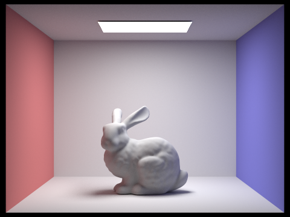 |
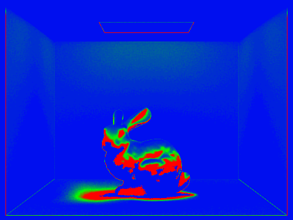 |
|
|
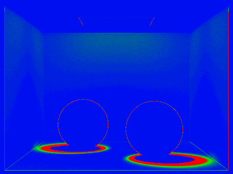 |